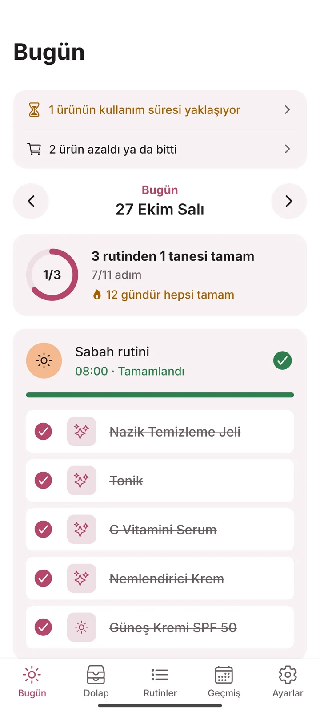
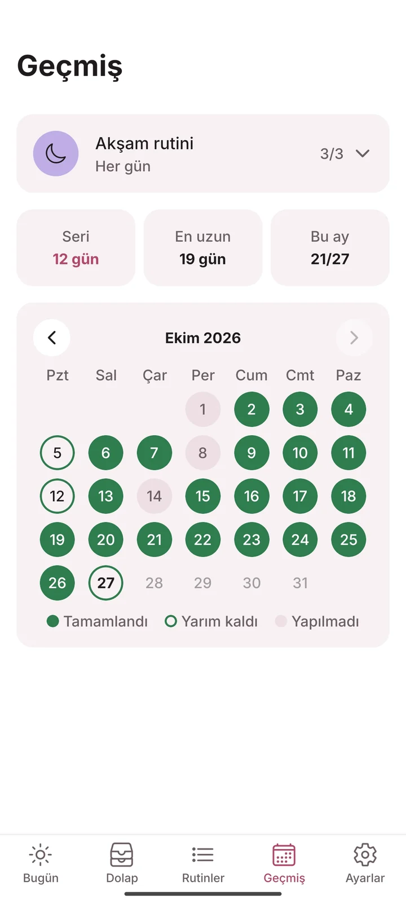
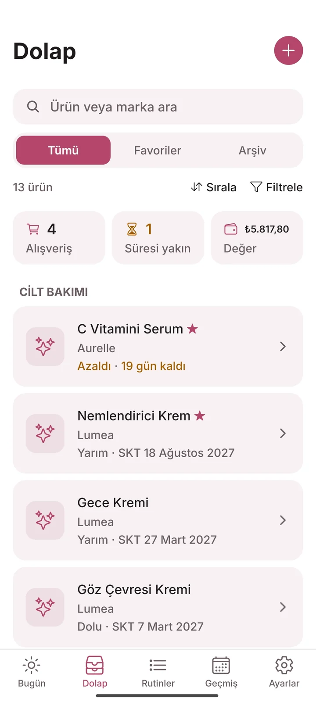
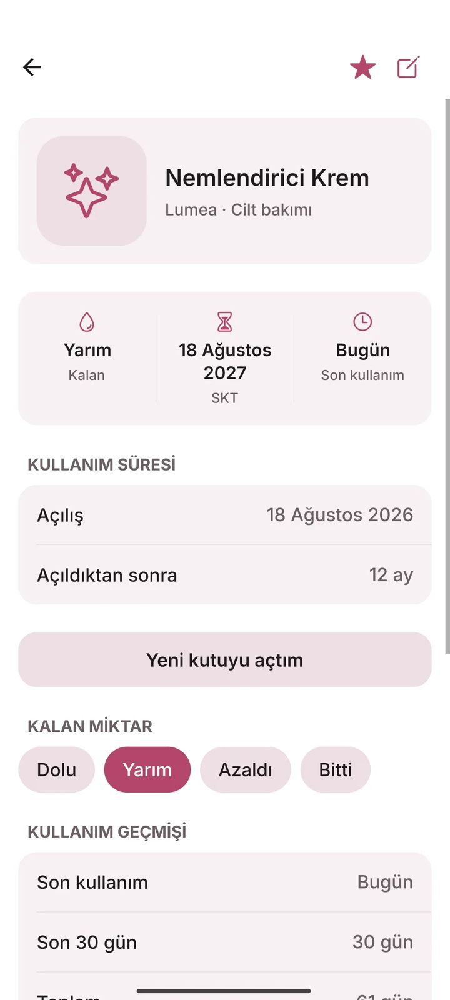
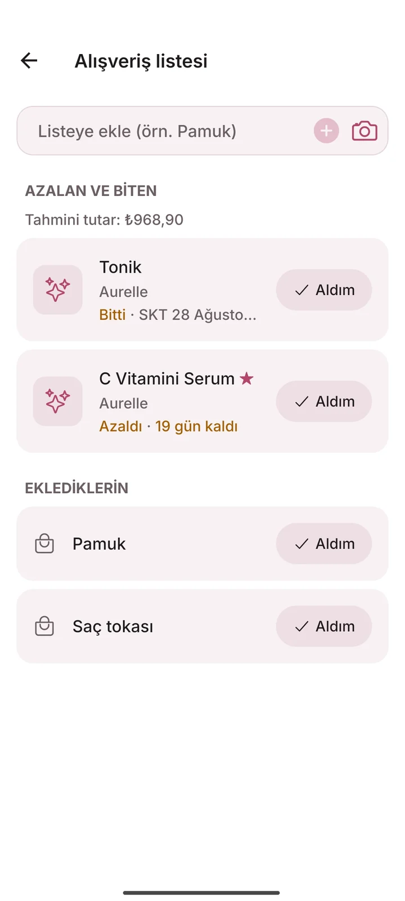
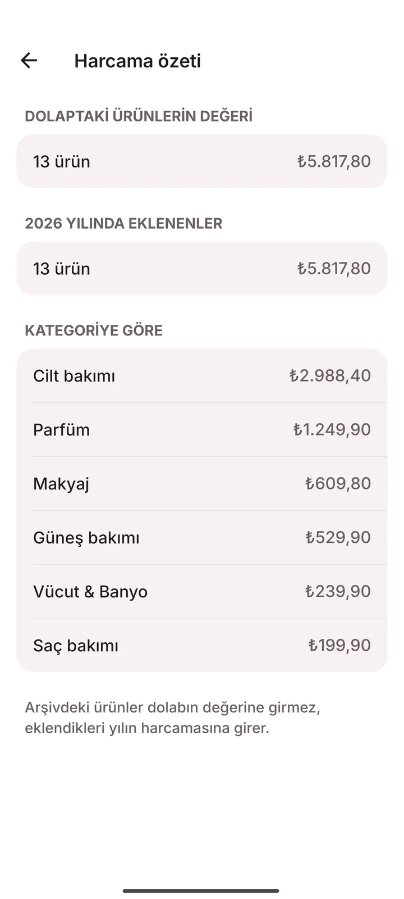

Sabahın, akşamın, dolabın.
Cilt bakım rutinin ve ürün dolabın için sakin bir defter. Adımlarını işaretle, ürünlerinin ne zaman bittiğini bil. Reklam yok, hesap yok, abonelik yok; girdiğin her şey telefonunda kalır.

Sabah beş adım,
hiçbirini unutmadan.
Sabah, akşam ya da haftalık maske: istediğin kadar rutin kur. Her adıma dolabındaki ürünü bağla ya da “Yüzü temizle” gibi kendin yaz. Bütün adımlar bitince rutin tamamlanır, serin bir gün uzar.
- Yüzü temizle
- Tonik
- C vitamini serumu
- Nemlendirici
- Güneş kremi
- Her gün, haftanın seçtiğin günleri ya da “her 3 günde bir”.
- Maske gibi bir adımı yalnızca seçtiğin günlerde göster.
- Rutin modu: adımlar tek tek gelir, ekranın herhangi bir yerine dokunup geçersin.
- Her rutinin takvimi ve seri sayacı; unuttuğun adımı önceki güne dönüp işaretle.



Hangisi bitiyor,
hangisi bekliyor.
Ürünlerini kategoriye göre diz: cilt bakımı, güneş, makyaj, saç, vücut & banyo, parfüm. Her ürünün kendi hikâyesi var: en son ne zaman kullandın, son 30 günde kaç kez, kullanım başına kaça geldi.
Kavanozdaki 12M ne demek?Açıldıktan sonra 12 ay. “Ürünü açtım”a dokun, son kullanım gününü Losia hesaplasın; kutudaki tarih daha erkense onu esas alır.
Kalan miktarı sen işaretlersin; azalanlar alışveriş listesine kendiliğinden düşer.
Akşam rutini
zamanı.
Losia rutin saatinde haber verir; bildirimden “Tamamladım” ya da “Ertele” dersin. Bir ürünün kullanım süresi dolmadan 30 ve 7 gün önce de küçük bir not düşer.
- İstersen, rutini işaretlemezsen yarım saat ya da bir saat sonra bir kez daha.
- Haftalık “azalan ürünler” özeti.
- Bildirimler telefonda planlanır, internete çıkmaz.
Bitmeden
listede.
Azalan ve biten ürünler alışveriş listesine kendiliğinden gelir. Pamuk gibi başka bir şeyi yazarak ya da fotoğrafını çekerek eklersin. “Aldım” deyince ürün yenilenir ya da dolaba yeni ürün olarak girer.
Fiyat girdiysen tahmini tutarı ve dolabının toplam değerini de görürsün.


Girdiğin her şey telefonunda kalır.
Losia'nın sunucusu yok. Hesap açmazsın, giriş yapmazsın. Telefon değiştirirken yedek dosyasını sen oluşturur, nereye göndereceğini sen seçersin.
Gizlilik politikasının tamamı- Sunucu
- Hesap
- Reklam
- Analitik
- Abonelik
Aklına
takılanlar.
Losia ücretli mi?
Losia'yı ücretsiz indirirsin; rutinler, dolap, hatırlatmalar ve alışveriş listesi ücretsizdir. Reklam ve abonelik yoktur.
iPhone'da var mı?
Şimdilik yalnızca Android'de; Google Play'de yayımlanacak.
İnternet bağlantısı gerekiyor mu?
Hayır. Losia tamamen telefonunda çalışır; hatırlatmalar da telefonda planlanır.
Telefonumu değiştirirsem verilerim ne olur?
Ayarlar › Yedekleme'den bir yedek dosyası oluşturup yeni telefonda geri yüklersin. İstersen haftalık otomatik yedeği aç; Losia haftada bir, seçtiğin klasöre yedek alır.
Ürünlerimin içeriğini ya da cildimi değerlendiriyor mu?
Hayır. Losia bir rutin ve dolap defteridir: ne yaptığını ve neyin ne zaman bittiğini tutar. İçerik listelerini incelemez, fotoğraftan değerlendirme yapmaz.
Hangi dillerde?
Türkçe ve İngilizce. Telefonunun diline göre açılır, Ayarlar'dan değiştirebilirsin.